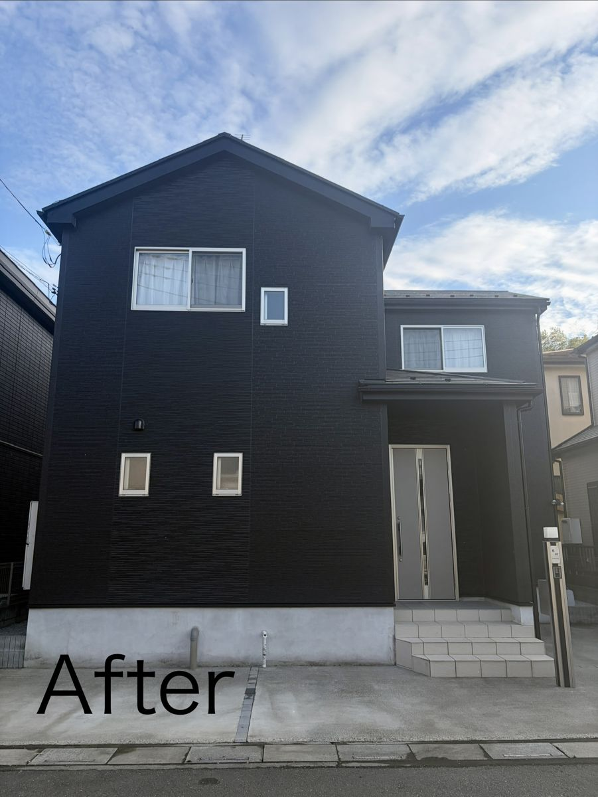
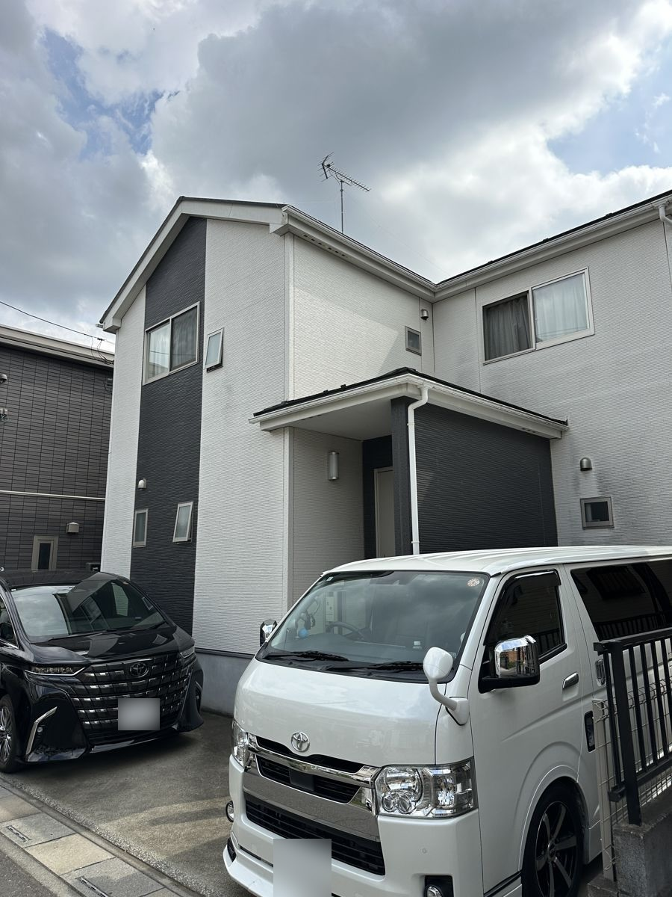
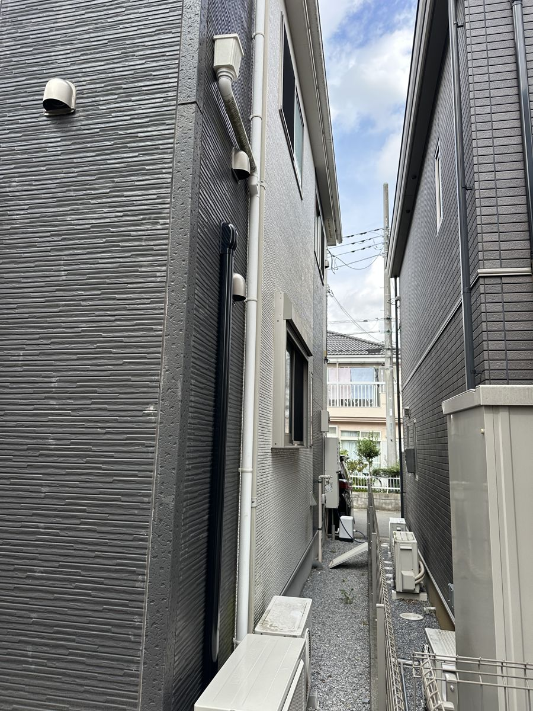
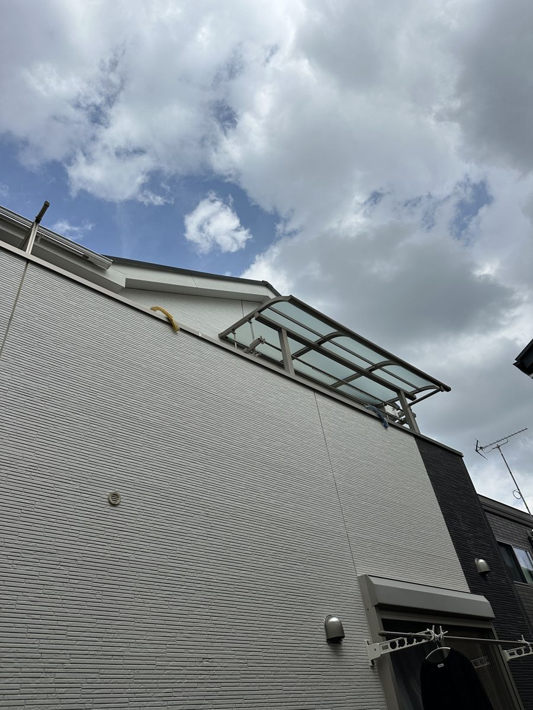
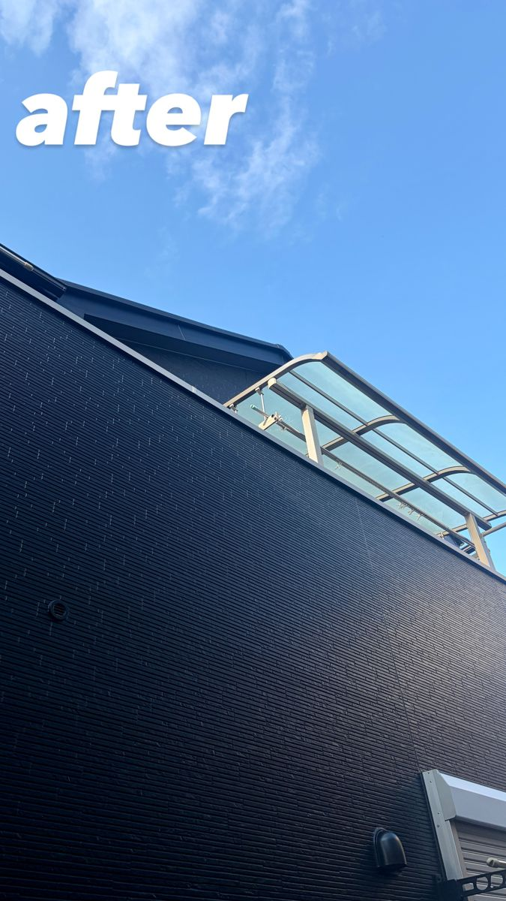
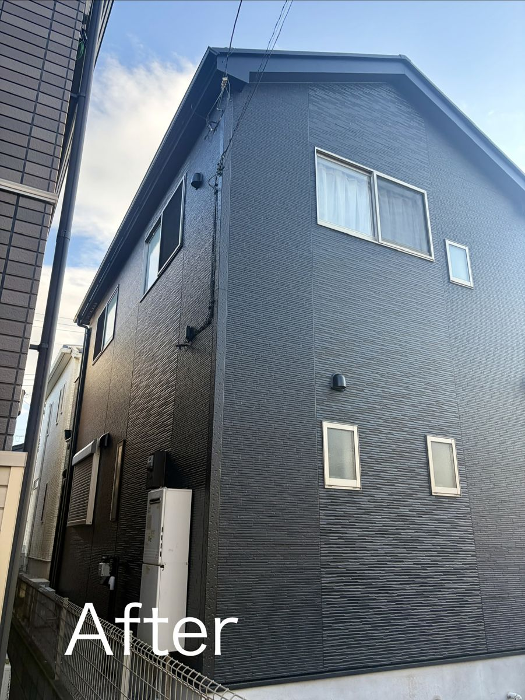
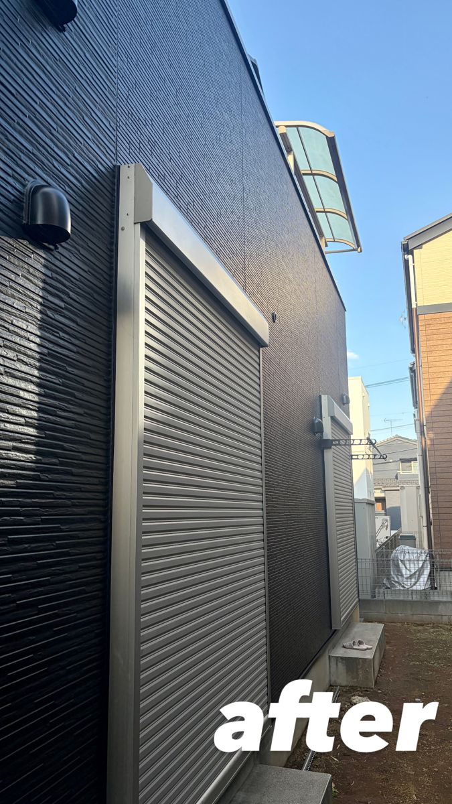

桶川市坂田 K様邸 ／ 築12年・窯業系サイディング ／ 2025年10月〜11月施工

「真っ黒な家にしたい」というご要望からのスタートでした。黒は艶を出すとムラや汚れが目立ちやすいため、艶を落とした仕上がりをご提案。光を反射しないマットな質感になり、サイディングの凹凸が陰影として際立ちます。
雨樋・軒天・破風まで黒で統一し、白いサッシだけをコントラストとして残しました。黒い家は、付帯部を塗り残すとそこだけ浮いて見えて締まりません。屋根は熱を吸収しやすい黒に合わせ、遮熱塗料のパーフェクトクーラーベストを採用しています。
お隣との間が非常に狭い立地でしたが、足場を組んで全面を施工。外壁・屋根・付帯部・ベランダ防水まで含めて20日で完了しました。
| 所在地 | 埼玉県桶川市坂田 |
|---|---|
| 築年数 | 築12年 |
| 外壁材 | 窯業系サイディング |
| 工事内容 | 外壁塗装・屋根塗装・付帯部塗装・ベランダ防水 |
| 使用塗料 | 外壁：日本ペイント パーフェクトトップ（艶調整） 屋根：日本ペイント パーフェクトクーラーベスト（遮熱） 付帯部：日本ペイント ファインSi |
| 費用 | 110万円 〜 130万円（税込） |
| 工期 | 約20日 |
| 施工時期 | 2025年10月 〜 11月 |

白とダークグレーのツートンから、外壁・屋根・付帯部まですべて黒に。

お隣との間隔がほとんどない面。こうした場所も足場を組んで塗り残しなく仕上げます。


艶を抑えたことで光が反射せず、サイディングの凹凸が陰影として出ています。


真っ黒な家にしたくて相談しました。艶を落とせばカッコよく仕上がると教えてもらってお願いしました。イメージ通りにしてもらえてよかったです。
同じ黒でも、艶ありにすると光を強く反射し、塗りムラや汚れ、下地の不陸が目立ちやすくなります。艶を抑えるとマットに締まり、素材の質感が出ます。カタログの色番号だけでは決まらない部分なので、必ずご説明したうえで選んでいただいています。
濃い色は日射を吸収するため、屋根も同時に施工する場合は遮熱塗料をおすすめしています。この現場ではパーフェクトクーラーベストを使用しました。
雨樋、軒天、破風。ここを既存色のまま残すと、外壁だけが黒くなって全体がちぐはぐに見えます。この現場では付帯部まで黒で通し、白いサッシだけを残しました。
A. 色の印象と暑さ対策は分けて考えます。この現場では、屋根に遮熱塗料を採用し、外壁は艶を抑えた黒で仕上げました。
色の相談だけでも構いません。写真を送っていただければ、AIで色のイメージを作ってお見せすることもできます。